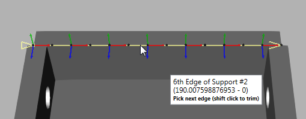
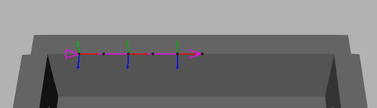
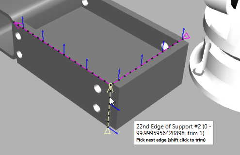
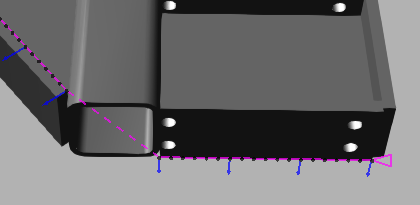
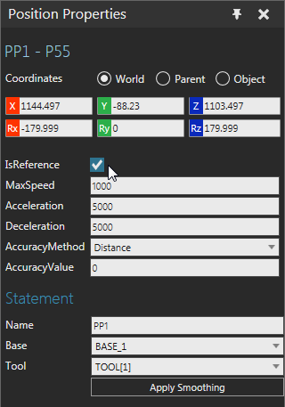
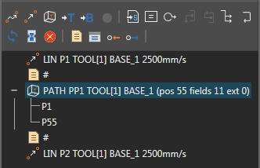

Teaching a Path of Positions
A Path statement allows you to add and edit robot positions along the
curves and bisectors of geometry.
Add Path and Positions
Initially, a Path statement is an empty collection of positions, which
is why the Select Curve command is used to select geometry and add new
path positions. The tool push direction for a path is the positive X-axis
of an active tool frame's coordinate system in a robot configuration.
- Click the Program tab,
and then use the Jog command to select
the robot you want to program in the 3D world.
- In the Program Editor
panel, select the routine you want to contain a Path statement, and
then in Statements toolbar, click Path Statement.
- In the Select Curve
task pane, do one or more of the following:
- In order to select geometry, in the Pick section, enable Edge
and/or Curve.
- To define the expansion of a path along selected
curves, in the Auto Expand section,
make any needed edits to those properties. Generally, you need
to fine tune these properties in order to select valid curves.
For example, you may want the path to be continuous and round
corners except those at or above a 90 degree threshold.

- To offset path positions, in the Curve
Offset section, make any needed edits to those properties.
A curve point has the following orientation: X-axis points along
the curve, Y-axis points perpendicular to the XY plane, and the
Z-axis points perpendicular to the curve surface. The orientation
of a path position is calculated using the orientation of a curve
point and the Motion Parameters properties.

- To affect the visualization and number of
path positions, in the Point Density
section, make any needed edits to those properties. The Chordal Deviation and Angular
Deviation properties can be used to affect path precision.
The Max Distance property can be used
to generate more or less points based on curve segment length.

- To define the configuration of the robot
and order of execution for path positions, in the Motion
Parameters section, make any needed edits to those properties.
With the exception of the Reverse property, most of these properties
are applied after you generate a path since they are used to generate
motion statements not curve points. You can enable the Visualize
Choices check box to show a curve point with its coordinate
axes, otherwise a curve point is shown with its approach axis.
Curve points are always visible, but coordinate and approach axes
are shown/hidden based on the 3D world camera location in order
to reveal more or less detail without obstructing your view. In
most cases, you need to pay special attention to the Approach
Axis and Align To properties since they directly affect the orientation
of a robot at each path position.

- In the 3D world, point to the edge or curve you
want to generate as a path. An explanation on visual feedback: coordinate
axes or an approach axis will appear at a calculated point in the
curve; a yellow line is a preview of the path and its end points denote
start and end directions of path; black spheres represent curve points;
and a note indicates information related to topology and curve data.

- Do one of the following:
- If the yellow highlighted path is acceptable,
click the edge or curve. The highlight color will change from
yellow to purple.

- If the yellow highlighted path is not acceptable,
do one of the following:
- To edit curve selection and path properties,
go back to Step 3. Generally, you only need to do this when
you are creating a continuous path. Regardless, you can use
the Select Curve task pane to edit a path after you have selected
a curve.
- To select a different edge or curve,
go back to Step 4. If you are have difficulty selecting an
edge or curve, turn on the camera's headlight. If the orientation
of the path is an issue, adjust the pointer until the coordinate
axes of the curve point are acceptable. If the direction of
the path is an issue, move the pointer forward or backward
along the path to adjust the endpoint directions.
- To select a curve then edit its path,
click the edge or curve, and then go on to Step 6.
- Do one of the following:
- To undo a curve selection, press the Backspace
key.
- To trim a path, hold down SHIFT and then
point to the location on the path where you want to trim, and
then click that location. This can only be done using the start
and end points of a curve. That is, you can either trim the start
or end of a path to a point. In this case, the operation will
trim whichever end point is closest to your selection.

- To edit a path, in the Select
Curve task pane, edit one or more properties. The path
will be automatically updated in the 3D world.
- To continue selecting curves, do one or more
of the following:
- To freely select another curve, repeat
Steps 4 and 5 with some insight. The point where the new curve
will connect to the path will be highlighted yellow. If the
new curve shares a point with the path, this may reconfigure
the entire path.

Otherwise, a connecting line (dashed line) marks where the
path continues from the end of one curve to the start of another
curve.

- In the Select Curve
task pane, click Generate.
Select Path and Positions
Path
A Path statement can be selected like any other normal statement in
a robot program.
- Click the Program tab,
and then use the Jog command to select
a robot in the 3D world.
- In the Program Editor
panel, select the routine containing the Path statement you want to
select, and then in the Statements list,
select the desired Path statement.
Position
Any position of a Path statement can be selected in the 3D world.
- Click the Program tab,
and then use the Jog command to select
a robot in the 3D world.
- In the 3D world, do one of the following:
- To select a position, click the colored dot
of the desired position.
- To select a position along a path segment,
click the line of a desired path segment. This will select a position
of that path segment closest to the pointer.
Tips:
- With a path position selected, use the Left and
Right arrow keys to select the previous or next path position.
- With a path position selected, use the Up and
Down arrow keys to select the next or previous path reference position.
- Use the CTRL key to add or remove path positions
from a selection in 3D world.
- Use the Select command to select one or more
path positions. This is helpful if you want to edit multiple positions
and do not want the active robot to snap to a selected position.
- Use the Jog command to select a path position.
This is helpful if you want to teach a robot and touch up a position.
- Use the Program Editor panel to select path reference
positions.
Edit Path and Positions
The properties of a Path statement and reference points can be used
to edit the positions of a path.
- Click the Program tab,
and then use the Jog command to select
the robot you want to program in the 3D world.
- In the Program Editor
panel, select the routine containing the Path statement you want to
edit, and then do one of the following:
- To replace all positions, click the Path statement, and then in the Statement
Properties panel, click Select Curve.
Next, use the Select Curve task pane
to select curves and generate new robot positions for the path.
- To reverse all positions, click the Path statement, and then in the Statement
Properties panel, click Reverse.
- To lock/unlock an axis in all positions,
click the Path statement, and then
in the Statement Properties panel,
Lock Axis property, click the axis
you want to lock or choose None to
unlock all axes based on a path position's coordinate system.
- To mark a position as a fixed point and reference
for modifying other positions, select the path position, and then
in the Position Properties panel,
select the IsReference check box.
- To unmark a position as a reference point,
do one of the following:
- To directly unmark a position, select
the path position, and then in the Position
Properties panel, clear the IsReference
check box.
- To automatically unmark all positions,
click the Path statement, and
then in the Statement Properties
panel, click Clear References.
- To adjust the orientation of positions, do
all of the following:
- Mark one or more positions in the path
as reference points, and then make any necessary edits to
those points. For example, you can touch up the orientation
of a position marked as a reference point.
Technical: If you use more than
one reference point, adjustments to other positions will be
blended based on the curve index of reference points and the
Lock Axis and Interpolation
properties of the Path statement. For example, positions between
reference points would be a blend of those limits, whereas
other positions might inherit a percentage of a reference
point orientation.
- Click the Path
statement, and then in the Statement
Properties panel, make any necessary edits to properties,
and then click Apply Smoothing.
Generally, you would edit the Lock Axis property to achieve
the desired tool center point orientation. In such cases,
you might adjust the rotation of a reference point around
the Y-axis, lock the Y-axis in the path, and then apply smoothing
to update the Z-axis of path positions.
- To apply a nozzle offset to positions, for
example a welding path, do all of the following:
- Mark at least two positions in the path
as reference points, and then make any necessary edits to
those points. Generally, you would mark the start and end
positions of a weld seam or an edge/curve that requires a
tool tip offset.
- Click the Path
statement, and then in the Statement
Properties panel, set the Nozzle
Offset property to desired value, and then click Apply Nozzle Offset.
- To show/hide labels for positions marked
as reference points, click the Path
statement, and then in the Statement Properties
panel, do one of the following:
- To hide labels, clear the Show
Labels check box.
- To show labels, select the Show
Labels check box.
- To use a different manipulator for path positions
when you are jogging a robot, click the Path
statement, and then in the Statement Properties
panel, do one of the following:
- To use the Move tool, clear the Rotation Handles check box.
- To use interactive rings for rotations
in a selected position's coordinate system, select the Rotation Handles check box. This is
unique for every Path statement. If the Lock Axis property
is set to None, you can rotate in three axes; otherwise, you
are limited to one axis of rotation.
Path and Position Properties
Motion Type
Robot positions generated by a Path statement are continuous linear
motions. Each motion statement can be marked as a fixed reference point
for modifying other positions in the path. The Name, Base and Tool properties
of a Path statement are shared with its positions. Editing those properties
in one position would update all other positions in the same path.

Grouping
In the Program Editor panel, a Path statement is listed with its reference
points and its header shows the number of positions in the path. Other
statements cannot be nested with a Path statement.

Labeling
In the 3D world, a path is a colored line. Green is used to show path
segments within reach of a robot. A gradient from green to red is used
to show unreachable path segments. Reference points are labeled as robot
positions and colored magenta. Other points in a path are colored dots:
green dots are reachable positions, and red dots are unreachable positions.